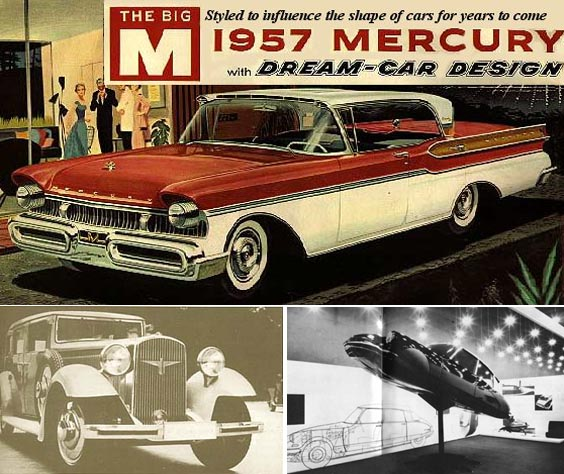
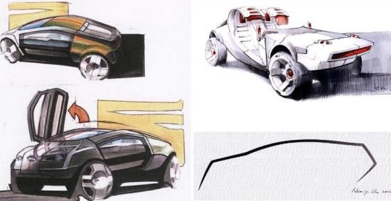

|
TMMOB
Makina Mühendisleri Odasý
IX. Otomotiv ve Yan
Sanayii Sempozyumu
27-28 Mayýs 2005
Doç.
Dr. Mehmet Asatekin
asatekin@arch.metu.edu.tr
ODTÜ Endüstri Ürünleri Tasarýmý Bölümü, Ankara
Özet
Styling,
yani endüstriyel tasarým, otomotiv endüstrisinde önemli bir
artý deðer olarak kabul edilmektedir. Bu artý deðer öncelikle
pazarlama sürecinde, bir görsel anlamlýlýk / görsel çekicilik
aracý olarak deðerlendirilir. Oysa tasarým disiplini görsellikten
öte deðerleri de sentez sürecine alan, geniþ bir kriterler
yelpazesinde çalýþan bir disiplindir. Aracýn genel görselliðinin
farklý kaynaklardan empoze edildiði Türk otomotiv sanayii
ve yan sanayiinde iç pazara ya da iç veya dýþ niþ pazarlara
yönelik özgün tasarýmlarýn önemli olduðu kanýsý ile bu bildiride
endüstriyel tasarým genelinin otomotiv sanayiine getirebileceði
görsel artý deðerlerden öte deðerler örneklenecektir.
Anahtar
sözcükler: Otomotiv tasarýmý, endüstriyel tasarým, ergonomi,
kullanýlabilirlik
1.
GÝRÝÞ
Otomobiller,
yaþam biçimlerinin daha iyileþmiþ bir düzeyi için önemli bir
mühendislik katkýsý ve teknolojik bir yenilik olarak ortaya
çýkmýþlardýr. Otomobilin karmaþýk bir sistem olarak teknolojik
çözümlemesi uzun bir süre ve farklý kiþilerin teknik etkinlikleri
sonucu mümkün olmuþtur. Ýlk örneklerinde tamanen bir atsýz
at arabasýna benzeyen otomobiller zamanla kendilerine has
bir görünüme kavuþmuþlardýr. Bu temel yani karakteristik imaj
aradan geçen yýllara ve birçok teknolojik yeniliðe raðmen
bugün de devam etmektedir.
Ancak,
bu karakteristik imajýn arkasýnda, endüstriyel tasarým açýsýndan,
çok etken bir geliþim çizgisi de yatar. Otomobilin gerek bir
teknolojik varlýk gerekse de bir sosyal fenomen olarak geliþmesinde
sayýsýz katkýlarý olan Henry Ford'un Model T için söylediði
"Siyah olduðu sürece her renk yapabilirsiniz." cümlesinin
yaþamý pek de uzun olmamýþtýr. 1930larýn Amerikasýnda yaþanan
ekonomik buhran diðer birçok üründe olduðu gibi otomobillerin
de farklýlýk yaratarak müþteriyi çekecek bazý özgün görsel
niteliklere sahip olmalarý gereðini gündeme getirmiþtir. Farklý
renkler, farklý biçimler mevcut teknolojiyi pek de deðiþtirmeden
müþteri için bir farklýlýk yaratmanýn kolay ama geçerli bir
yolu olarak ortaya çýkmýþtýr. Buhran sonrasý yýllarda tasarým
(ki artýk buna otomotiv çevrelerinde "styling" denmektedir)
önemli bir etkinlik olarak üretim sürecinde yer almýþtýr.
Harp sonrasý oluþan Amerikan tüketim toplumunda ise her sene
yeni bir görsellik yaratýp yeni bir model olarak pazarlamak
ve tüketimi arttýrmak normal bir uygulama olmuþtur.

Þekil
1: Amerika'da Mercury'nin rüya otomobili, Avrupa'da ünlü
mimar Walter Gropius'un tasarýmý Adler ve Milano Trienalinde
heykelsi karakteri öne çýkarýlan Citroen DS19
Avrupada
ise otomobilin bir tasarým nesnesi olarak ortaya çýkmasý daha
deðiþik bir süreçtir. 1925lerde Avrupa mimarlýk ortamýnda
oluþturulan modern tasarým akýmýnýn bütünlükçü karakterinde
günlük yaþam nesneleri de yerlerini bulmuþ, ünlü mimarlar
bu nesneleri de tasarlamýþ ve bu paralelde otomobillerle de
ilgilenmiþ, modeller geliþtirmiþlerdir. Diðer bir deyiþle,
Amerikadaki ticari dürtüye kýyasla daha akademik/entellektüel
bir süreç Avrupanýn otomotiv tasarýmýný yönlendirmiþtir. Ancak
sonuç her iki toplum için de ayný olmuþtur: Görsel çekiciliði
bir artý deðer halinde pazarlama stratejisi olarak kullanmak.
2.
ENDÜSTRÝYEL TASARIM VE OTOMOTÝV
Toplum
bilincinde endüstriyel tasarým da öncelikle görsel deðerlerle
uðraþan bir disiplin olarak algýlanýr. Tasarýmcýlar bir tür
sanatçý kabul edilir ve görevlerinin nesneleri "güzelleþtirmek"
olduðu iddia edilir. Otomobil tasarýmcýlarýnýn da görselliðin
uç noktalarýnda formlar üreten, yeni (devrimci? kýþkýrtýcý?
avant-garde?...) imgeler yaratan kiþiler olduðu kabul edilir.

Þekil
2: Konsep eskizleri
Oysa
endüstriyel tasarým görsel bir egzersizden çok daha ötede
sorumluluklarý olan bir uðraþ alanýdýr. Tasarýmcý öncelikle
bir iþlevsel çözümleme yapabilmeli ve ürünün hem iþlevselliðini
hem de kullanýþlýlýðýný saðlamalýdýr. Bu çerçevede iþlevselliðin
koþullarýný, kullaným problemlerinin çözümünü, ergonomik tasarým
kurallarýný bilmesi gerekir. Ürünün üretilebilecek bir yapýda
olmasýný da bilmek durumundadýr. Dolayýsý ile malzeme ve üretim
teknolojilerine bir mühendis kadar hakim olmasa da üretim
mühendisine aykýrý gelmeyecek önerilerde bulunacak kadar bu
konulara duyarlý olmasý gerekir.
|